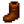
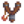
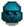
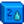

Madenler
| Madenler | |
 | |
 | |
| Kapalı Günler: | Asla |
| Oturanlar: | |
Madenler, dağın kuzey tarafında (Marangoz Atölyesi'nin kuzeydoğusunda ve Maceraperestler Loncası'nın batısında) bulunan bir bölgedir. 1. yılın Bahar 5'ine kadar girişi bir toprak kayması ile kapalıdır.
Genel Bakış
Madenlerde 120 kat (veya "seviye") bulunur. Madenlerde derine indikçe cevher türü ve miktarı artar. Madenlerde birçok taş ve toprak zeminler bulunur. Bir kazma ile taşlar kırılarak içlerinden taş, cevher ve jeotlar çıkarılabilir. Bir çapa ile toprak zeminler çapalanarak mineraller, eserler, cevherler, kil ve mağara havucu çıkarılabilir.
Madenlerde daha derine inebilmek için her katta bir merdiven bulunmalıdır. Merdiven ise taş kırarak veya bir canavarı keserek bulunur (enerji tasarrufu için canavarları kesmek daha iyi bir yoldur). Bir katı canavarlar "istila etmiş" veya canavarlar ile "dolup taşmış" ise merdiveni açığa çıkarmak için bütün canavarların öldürülmesi gerekir (ancak bazen bir oyun hatası sebebiyle bütün düşmanlar öldürülmeden de merdivenin açığa çıktığı olabilir). Bir kat inildiğinde oyuncu 1 saniyeliğine dokunulmaz olur.
Oyuncu, madenlerde yorgunluktan (sıfır Enerji) veya saatin 02.00 olması sebebiyle bayılırsa maksimum  1.000g altına kadar, altınının %10'ununu kaybeder. Sağlık tükenmesinedn ötürü bayılırsa maksimum
1.000g altına kadar, altınının %10'ununu kaybeder. Sağlık tükenmesinedn ötürü bayılırsa maksimum  15.000g altına kadar, %5 ila %25 altın[1] ve (Galaksi Kılıcı hariç) Silahlar ve Aletler dahil birkaç eşya kaybeder. Aletler kaybolursa ertesi gün mektup ile geri gönderilir ancak oltalar ve silahlar geri dönmez. Oyuncu uyandığında ise madenin girişinde uyanır.
15.000g altına kadar, %5 ila %25 altın[1] ve (Galaksi Kılıcı hariç) Silahlar ve Aletler dahil birkaç eşya kaybeder. Aletler kaybolursa ertesi gün mektup ile geri gönderilir ancak oltalar ve silahlar geri dönmez. Oyuncu uyandığında ise madenin girişinde uyanır.
Kaybolmuş ögeler, Maceraperestler Loncası'ndaki Marlon ile konuşarak kurtarılabilir. Ödenecek miktar, ögenin veya yığınının satış fiyatına eş değerdir. Yalnızca bir öge (veya yığını) kurtarılabilir ve diğer ögeler tamamen kaybolur. Kaybolan ögeler, eşya kurtarma hizmetinde her daim durur ancak oyuncu bir kere daha bayıldığında bu sefer önceki kaybolmuş ögeler tamamen kaybolur ve kurtarma hizmetinde yeni bayılmada kaybolan ögeler gelir.
Giriş katında madenlerden diğer yerlere hızlı gidiş için bir Maden Arabası bulunur. Kazan Dairesi yığınları tamamlandığında veya JojaMart'taki Joja Toplumsal Gelişim Proje Formu'ndan  15.000g karşılığında "Maden Arabaları" satın alındığında kullanılabilir olur.
15.000g karşılığında "Maden Arabaları" satın alındığında kullanılabilir olur.
İçerikler
Katlar
Madenler, 120 kattan (veya "seviyeden") oluşur. Bu katlar her biri 40 kat barındıran ve kendi temasına sahip üç bölümden oluşur: ilk bölümde kahverengi bir yeraltı, ikinci bölümde donmuş bir yer, üçüncü ve son bölümde ise lavlı mor yerler görülür. Her bölümün son 10 katı, ana temanın farklı bir varyantına sahip olur: ilk bölümün sonunda (31-39. katlarda) karanlık bir tema, ikinci bölümün sonunda (70-79. katlarda) bir kale teması, üçüncü ve son bölümün sonunda (110-119. katlarda) daha kırmızı bir tema yer alır.
Her bölümün aynı sıraya sahip seviyeleri, aynı şekle sahip olur. Örneğin; 5, 45, 85. katlar; 19, 59, 99. katlar; 31, 71, 111. katlar birbirleriyle aynı şekle sahiptir.
Her yılın başında kömür bulunan maden arabalarının içine yeni kömürler eklenir.
| Kat | Tema | Düşmanlar | Hazineler | Notlar |
|---|---|---|---|---|
| Giriş | Kahverengi Topraklar | Yok | Bir Maden Arabası bulunur. Doğudaki gizli yerde Cüce yaşar. (Ortadaki engeli yok etmek için bir Çelik Kazma veya herhangi bir bomba gerekir.) | |
| 1 - 9 | Kahverengi Topraklar | 2. katta Bakır Cevheri görülmeye başlar. Ametist, Topaz, Kuvars ve Yüzey Kristali değerli taşları bulunabilir. Oyuncu, madenlerin sonuna ulaşmışsa Elmas dışında bütün değerli taşlar bulunabilir olur. | ||
| 10 | Kahverengi Topraklar | Yok |  Deri Çizmeler | |
| 11 - 19 | Kahverengi Topraklar, Yabani Otlar | 12. katta yolun sonunda 6 kömür barındıran bir maden arabası bulunur. Kat istila edilmiş olsa bile sonunda mutlaka bir merdiven bulunur. 18. katta katın sağ alt tarafında 6 kömür barındıran bir maden arabası bulunur. 19. katta sarmal bir şekil bulunur. | ||
| 20 | Kahverengi Topraklar | Yok | Balıkçılık: Hayaletbalığı, Kayabalığı ve Mağara Jeli | |
| 21 - 29 | Kahverengi Topraklar, Yabani Otlar | 28. katta katın sağ alt tarafında 6 kömür barındıran bir maden arabası bulunur. | ||
| 30 | Kahverengi Topraklar | Yok | Ödül yok | |
| 31 - 39 | Karanlık Gri Topraklar | Bakır Cevheri ve Jeotlar yaygındır. 38. katta katın sol üst tarafında 6 kömür barındıran bir maden arabası bulunur. | ||
| 40 | Donuk Topraklar | Yok | ||
| 41 - 49 | Donuk Topraklar | Demir Cevheri, Donuk Jeot, Gök Zümrütü, Donmuş Gözyaşı ve Yeşim çıkmaya başlar. 45. kat, her yılın başında yenilenir. | ||
| 50 | Donuk Topraklar | Yok | Elmas çıkmaya başlar (500 taşta 1). 50. kattan sonra her katta oranı 0,00016 artar (yani 100. katta 100 taşta 1 olur). | |
| 51 - 59 | Donuk Topraklar | Çokça Toz Tayfı çıkar (Kömür düşürürler). 52. katta yolun sonunda 6 kömür barındıran bir çanta bulunur. Kat istila edilmiş olsa bile sonunda mutlaka bir merdiven bulunur. 58. katta katın sağ alt tarafında 6 kömür barındıran bir çanta bulunur. 59. katta sarmal bir şekil bulunur. | ||
| 60 | Donuk Topraklar | Yok | Balıkçılık: Buzul Çekirdekbalığı, Hayaletbalığı ve Mağara Jeli | |
| 61 - 69 | Donuk Topraklar | 68. katta katın sağ alt tarafında 6 kömür barındıran bir çanta bulunur. | ||
| 70 | Donuk Kale | Yok |  Usta Sapanı | |
| 71 - 79 | Donuk Kale | 78. katta katın sol üst tarafında 6 kömür barındıran bir çanta bulunur. | ||
| 80 | Lavlı Mor Topraklar | Yok | ||
| 81 - 89 | Lavlı Mor Topraklar | Zümrüt, Kızıl Kuvars, Altın Cevheri, Yanık Jeot ve Yakut çıkmaya başlar. 85. kat, her yılın başında yenilenir. | ||
| 90 | Lavlı Mor Topraklar | Yok | ||
| 91 - 99 | Lavlı Mor Topraklar, Yabani Otlar | 92. katta yolun sonunda 6 kömür barındıran bir maden arabası bulunur. Kat istila edilmiş olsa bile sonunda mutlaka bir merdiven bulunur. 98. katta katın sağ alt tarafında 6 kömür barındıran bir maden arabası bulunur. 99. katta sarmal bir şekil bulunur. | ||
| 100 | Lavlı Mor Topraklar | Yok | Balıkçılık: Lav Yılanbalığı ve Mağara Jeli | |
| 101 - 109 | Lavlı Mor Topraklar, Yabani Otlar | Mistik Taşlar çıkmaya başlar. 108. katta katın sağ alt tarafında 6 kömür barındıran bir maden arabası bulunur. | ||
| 110 | Lavlı Kızıl Topraklar | Yok | ||
| 111 - 119 | Lavlı Kızıl Topraklar | Yanık Jeotlar yaygındır. 118. katta katın sol üst tarafında 6 kömür barındıran bir maden arabası bulunur. | ||
| 120 | Lavlı Mor Topraklar | Yok | Son kat |
Tehlikeli Katlar
Madenlerdeki tehlike seçeneği açıkken ("Derinlerdeki Tehlike" görevi ile veya Mücadele Sunağı açıksa olur) kat temaları, ögeleri ve canavarları; normal madenlerden farklı olur. Katlarda katın seviyesine göre renge sahip veüst üste binmiş balçıkçalar çıkabilir.
| Kat | Tema | Düşmanlar | Hazineler | Notlar |
|---|---|---|---|---|
| Entrance | Kahverengi Topraklar | Yok | Bir Maden Arabası bulunur. Doğudaki gizli yerde Cüce yaşar. (Ortadaki engeli yok etmek için bir Çelik Kazma veya herhangi bir bomba gerekir.) | |
| 1 - 9 | Mavi Topraklar | 2. katta Bakır Cevheri görülmeye başlar. Ametist, Topaz, Kuvars ve Yüzey Kristali değerli taşları bulunabilir. Oyuncu, madenlerin sonuna ulaşmışsa Elmas dışında bütün değerli taşlar bulunabilir olur. Su Yosunu, Mercan, Notilus Kabuğu, Renkli Kabuk, İstiridye, Kum Midyesi, Deniz Tarağı gibi kumsal toplanılabilirleri çıkar. Az bir ihtimalle İnci de çıkabilir. 5'in katı olmayan katlarda Radyoaktif Cevher çıkmaya başlar. | ||
| 10 | Mavi Topraklar | Yok | Deri Çizmeler | |
| 11 - 19 | Mavi Topraklar, Yabani Otlar | 12. katta yolun sonunda 6 kömür barındıran bir maden arabası bulunur. Kat istila edilmiş olsa bile sonunda mutlaka bir merdiven bulunur. 18. katta katın sağ alt tarafında 6 kömür barındıran bir maden arabası bulunur. 19. katta sarmal bir şekil bulunur. | ||
| 20 | Mavi Topraklar | Yok | Balıkçılık: Hayaletbalığı, Kayabalığı ve Mağara Jeli | |
| 21 - 29 | Mavi Topraklar, Yabani Otlar | 28. katta katın sağ alt tarafında 6 kömür barındıran bir maden arabası bulunur. | ||
| 30 | Gölgelik, Kara Topraklar | Yok | No reward | |
| 31 - 39 | Gölgelik, Kara Topraklar | Bakır Cevheri ve Jeotlar yaygındır. 38. katta katın sol üst tarafında 6 kömür barındıran bir maden arabası bulunur. | ||
| 40 | Sihirli Ormanlık | Yok | ||
| 41 - 49 | Sihirli Ormanlık |  Mavi Balçıkça (tehlikeli) |
Demir Cevheri, Donuk Jeot, Gök Zümrütü, Donmuş Gözyaşı ve Yeşim çıkmaya başlar. Maun Ağacı, Odun, Büyük Kütükler, Büyük Güdükler, Yabani Otlar ve Çimenin yanı sıra Kırmızı Mantar, Eğrelti Otu, Kuzumantarı, Mor Mantar ve Horozmantarı çıkar. | |
| 50 | Sihirli Ormanlık | Yok | Elmas çıkmaya başlar (500 taşta 1). 50. kattan sonra her katta oranı 0,00016 artar (yani 100. katta 100 taşta 1 olur). | |
| 51 - 59 | Sihirli Ormanlık, Örümcek Ağları | Oyuncuyu yavaşlatan çokça örümcek ağı çıkar. 52. katta yolun sonunda 6 kömür barındıran bir çanta bulunur. Kat istila edilmiş olsa bile sonunda mutlaka bir merdiven bulunur. 58. katta katın sağ alt tarafında 6 kömür barındıran bir çanta bulunur. 59. katta sarmal bir şekil bulunur. Katlar 40-50. katlarda olduğundan daha karanlıktır ve bir sis efektine sahiptir. | ||
| 60 | Sihirli Ormanlık | Yok | Balıkçılık: Buzul Çekirdekbalığı, Hayaletbalığı ve Mağara Jeli | |
| 61 - 69 | Sihirli Ormanlık, Örümcek Ağları | 68. katta katın sağ alt tarafında 6 kömür barındıran bir çanta bulunur. | ||
| 70 | Kemik Kalesi | Yok | Usta Sapanı | |
| 71 - 79 | Kemik Kalesi | 78. katta katın sol üst tarafında 6 kömür barındıran bir çanta bulunur. Donmuş Gözyaşı çıkmaya başlar. | ||
| 80 | Mantarlar, Mor Topraklar | Yok | ||
| 81 - 89 | Mantarlar, Mor Topraklar | Zümrüt, Kızıl Kuvars, Altın Cevheri, Yanık Jeot ve Yakut çıkmaya başlar. Canavarlar, burada çıkan çimenler arasında saklanabilir. | ||
| 90 | Mantarlar, Mor Topraklar | Yok | ||
| 91 - 99 | Mantarlar, Mor Topraklar, Yabani Otlar | 92. katta yolun sonunda 6 kömür barındıran bir maden arabası bulunur. Kat istila edilmiş olsa bile sonunda mutlaka bir merdiven bulunur. 98. katta katın sağ alt tarafında 6 kömür barındıran bir maden arabası bulunur. 99. katta sarmal bir şekil bulunur. Bu katlarda birçok yabani ot ve çimen çıkar. | ||
| 100 | Mantarlar, Mor Topraklar | Yok | Balıkçılık: Lav Yılanbalığı, Mağara Jeli | |
| 101 - 109 | Mantarlar, Mor Topraklar, Yabani Otlar | Mistik Taşlar çıkmaya başlar. 108. katta katın sağ alt tarafında 6 kömür barındıran bir maden arabası bulunur. | ||
| 110 | Lavlı Kestane Topraklar | Yok | ||
| 111 - 119 | Lavlı Kestane Topraklar | Yanık Jeotlar yaygındır. 118. katta katın sol üst tarafında 6 kömür barındıran bir maden arabası bulunur. | ||
| 120 | Mantarlar, Mor Topraklar | Yok | Son kat |
Düzenlenmiş Ödüller
Yeni bir oyun başlatırken gelişmiş seçeneklerden "düzenlenmiş" maden ödülleri açılırsa her katta ödül, aşağıdaki tablodan rastgele seçilerek verilir. Bazı katlar ise düzenlense bile aynı kalır.
| Kat | Mümkün Ödüller | Notlar |
|---|---|---|
| 10 | ||
| 20 | ||
| 30 | Ödül yok | Değişmez |
| 40 | Değişmez | |
| 50 | ||
| 60 | ||
| 70 | Usta Sapanı | Değişmez |
| 80 | ||
| 90 | ||
| 100 | Değişmez | |
| 110 | ||
| 120 | Değişmez |
Merdivenler
Merdivenler; canavarlardan[2], taşların altından[3] veya kendiliğinden[4] çıkabilir.
Bir kata girildiğinde %95 ihtimalle bir merdiven çıkarma işlemi yapılır. Rastgele bir kare seçilir ve üzerinde bir nesne yoksa merdiven açığa çıkar. Bu yol ile bir merdiven kendiliğinden çıkarsa taşların altından vs. başka bir merdiven daha çıkarılamaz.
Bazı katlarda merdiven zaten açıktır (12, 52 ve 92. katlarda ve Kafatası Mağarası'nda da hazine odalarında). Bu yol ile bir merdiven zaten açıksa taşların altından vs. başka bir merdiven de çıkarılabilir.
Kırılan her taşın altından merdiven çıkma ihtimali vardır ve ne kadar çok kırılırsa ihtimali de o kadar artar. İşlem başarılı olursa taşın altından merdiven çıkar ve başka bir merdiven daha çıkarılamaz. (Aynı zamanda Kafatası Mağarası'nda da %20 ihtimalle bir merdiven yerine bir delik çıkabilir ancak burada daha fazla merdiven/delik çıkarma engellenmez.)
Detayına inilecek olursa: kırılan her taşın merdiven çıkarmak %2'lik temel bir ihtimali bulunur. Bu ihtimal, günlük şanstan da etkilenir ve en iyi durumda %2,5 (Özel Tılsım ile birlikte) artar veya en kötü durumda %2 azalır. Şans etkileri, katta düşman olup olmadığı ve Cüce Kralın Heykelinden gelen daha fazla merdiven veya delik bulabilme etkisi gibi diğer etkenler de bunu etkiler. Örneğin, her şans etkisi seviyesi için %1 eklenir. Bir oyuncunun maksimum günlük şansa ve +1 şans etkisine sahip olduğunu varsayarsak bir taştan merdiven çıkarması 2 + 2,5 + 1 = %5,5 temel ihtimale sahiptir. Ayrıca taş kırdıkça mevcut taşların sayısı da azalacağı için ihtimal bu sırada da artar (örn. 5 taş varken bir taştan çıkma ihtimali %20 ve 1 taş varken bir taştan çıkam olasılığı %100'dür). Katta hiçbir canavar kalmamışsa bir %4 daha eklenir. Bütün bu ekleme ve çıkarma işlemlerinin sonunda da son sonuç 1,25 ile çarpılır.[5]
Kutular ve Variller
Madenlerdeki kırıldıklarında rastgele ögeler düşüren kutular ve variller vardır. İçlerinden düşen ögeler, kutu veya varil olmasına göre değişmez. İçlerinden bir öge veya birden fazla öge çıkabilir.
Çoğu kutu ve varil, bir kata her girildiğinde yenilenir. Ahşap zeminler üzerinde bulunan kutu ve variller ise her yıl yenilenir.[6] Ancak hazine katlarındaki sandıklar yalnızca bir kere belirir. Bu sandıklar kırılırsa yenileri çıkmaz.
Oyuncunun Madenlerin sonuna ulaşıp ulaşmamasına bağlı olarak daha farklı ögeler çıkabilir. Aşağıdaki tabloda yan yana iki değer varsa bu, birincisi Madenlerin sonuna ulaşmadan önce ve ikincisi sonra sahip olduğu ihtimaldir. Kutular ve varillerden çıkabilecek ögeler ve ihtimalleri şu şekildedir[7]:
| Öge | 0-39 | 40-79 | +80 (Kafatası Mağarası dahil) | Tehlikeli Madenler/Kafatası Mağarası (Birden fazla öge düşebilir) |
|---|---|---|---|---|
| Hiçbir şey | %41,42 | %41,42 | %42 | %44 |
| %9,24 | %9,24 | %5,2 | %7 | |
| %9,24 | %4,62 | %5,2 | %0 | |
| %2,24 | %2,24 | %1,87 | %0 | |
| %2,31/%0 | %2,31/%0 | %0 | %2/%0 | |
| %4,62 | %4,62 | %0 | %0 | |
| %4,62 | %4,62 | %5,2 | %4 | |
| %4,62 | %4,62 | %5,2 | %4 | |
| %0 | %4,62 | %5,2 | %4 | |
| %0 | %0 | %5,2 | %4 | |
| %0 | %0 | %0 | %0,68 | |
| %7,8 | %7,8 | %7,8/%5,2 | %0 | |
| %4,84 | %0 | %0 | %0 | |
| %0 | %4,84 | %0 | %0 | |
| %0 | %0 | %2,6 | %0 | |
| %0 | %0 | %1,87 | %4 | |
| %2,24 | %0 | %0 | %0 | |
| %2,24 | %0 | %0 | %0 | |
| %0 | %2,24 | %0 | %4 | |
| %0 | %2,24 | %0 | %4 | |
| %0 | %0 | %1,87 | %0 | |
| %0 | %0 | %1,87 | %0 | |
| %0 | %0 | %5,2 | %0 | |
| %0 | %0 | %1,87 | %0 | |
| %0/%4,62 | %0 | %0 | %4 | |
| %0 | %0/%4,62 | %0 | %0/%4 | |
| %0 | %0 | %0/%2,6 | %0 | |
| %2,31/%0 | %0 | %0 | %2/%0 | |
|  Kaliteli Tutucu Toprak (%2-3) | %0 | %2,31/%0 | %0 | %0 |
| %0 | %0 | %0 | %0,23 | |
| %0 | %0 | %0 | %0,23 | |
| %0 | %0 | %0 | %0,23 | |
| %0 | %0 | %0 | %4 | |
| %0 | %0 | %0 | %4 | |
| %0 | %0 | %0 | %0,15 | |
| %0 | %0 | %0 | %0,15 | |
| %0 | %0 | %0 | %0,15 | |
| %0 | %0 | %0 | %0,15 | |
| %0 | %0 | %0 | %0,15 | |
| %0 | %0 | %0 | %0,15 | |
| %0 | %0 | %0 | %0,15 | |
| %0 | %0 | %0 | %0,15 | |
| %0 | %0 | %0 | %0,15 | |
| %0 | %0 | %0 | %0,15 | |
| %0 | %0 | %0 | %0,15 | |
| %0 | %0 | %0 | %0,15 | |
| %0 | %0 | %0 | %0,15 | |
| %0 | %0 | %0 | %0,15 | |
| %0 | %0 | %0 | %0,15 | |
| %0 | %0 | %0 | %0,15 | |
| %0 | %0 | %0 | %0,15 | |
| %0 | %0 | %0 | %0,15 | |
| %0 | %0 | %0 | %0,15 | |
| %0 | %0 | %0 | %0,15 | |
| %0 | %0 | %0 | %0,15 | |
| %0 | %0 | %0 | %0,15 | |
| %0 | %0 | %0 | %0,15 | |
| %0 | %0 | %0 | %0,15 | |
| %0 | %0 | %0 | %0,15 | |
| %0 | %0 | %0 | %0,15 | |
| %0 | %0 | %0 | %0,15 | |
| %0 | %0 | %0 | %0,54 | |
| %0 | %0 | %0 | %0,68 | |
| Özel bir öge (aşağıya göz atın) |
%2,24 | %2,24 | %1,87 | %0 |
Özel Ögeler
Kutular ve varillerin %2,2 gibi küçük bir kısmı aşağıdaki özel ögelerden biri çıkabilir.[8] Bu kutular ve variller, diğerlerinden ayırt edilebilir bir görünüşe sahiptir.
Bu özel ögeler aynı zamanda canavarların küçük bir kısmından da düşebilir. Balçıkçaların %1,2'si altın bir yıldıza sahip Özel Balçıkçalardır. Diğer bütün canavarlar içinse canavarların %0,2'den azı standart ögeler yerine özel öge düşürür ancak bu canavarların görünüşü normal versiyonlarından farklı değildir.
Toprak Zeminler
Toprak zeminler çapalanarak bulunabilecek ögeler ve ihtimalleri aşağıda verilmiştir.[9] Toprağın bir çapa veya bir bomba ile kazılması farketmez.
| Öge | İhtimal |
|---|---|
| Hiçbir şey | %85,9 |
| %5,03 | |
| %4,68 | |
| %1,33 | |
| %0,16 | |
| %0,16 | |
| %0,16 | |
| %0,16 | |
| %0,16 | |
| %0,1 | |
| %0,1 | |
| %0,1 | |
| %0,1 | |
| %0,2 | |
| %0,03 | |
| %0,03 | |
| %0,17 | |
| Cevher (kata uygun olan) | %1,33 |
| Jeot (Kata uygun olan) | %0,51% |
İstila Edilmiş Katlar
Arada sırada oyuncunun girdiği katlar, balçıkçalar veya diğer canavarlar tarafından istila edilmiş olabilir. Normal katların aksine bu katlarda taş yoktur ve balçıkçaların istila ettiği katlarda duvarlar ve zemin yeşil balçıkça ile kaplamıştır. Kuvars veya Mantarlar gibi toplanılabilir ögeler bulunabilir.
Bir istila edilmiş katı geçmek için bütün canavarların kesilmesi gerekir (toprak zeminlerin altında saklanan Kazılcalar dahil). 12, 52 ve 92. katlar istila edilse bile katın sonunda merdiven her zaman bulunur ve canavarların kesilmesi zorunlu değildir. Bütün canavarlar kesildiğinde merdiven, canavarın kesildiği noktada veya girişin yakınında belirir. Girişin yakınında belirirse oyuncuya "Aşağıya giden bir geçit ortaya çıktı." bildirimi gelir. Son canavarın kesildiği konumda çıkarsa ve oyuncu bir süre merdiveni kullanmazsa girişin yanında aynı şekilde ikinci bir merdivenin çıkması mümkündür.
Bir merdiven ile de istila edilmiş kat atlanılabilir.
Sarımsak Yağı etkisi, katların istila olmasını engeller. Engellemesi için Sarımsak Yağının kata girmeden önce tüketilmiş olması gerekir.
Bazı durumlarda istila edilmiş bir katta canavarlar çıkmayabilir. Bu durumda daha önce bahsedildiği gibi bir süre sonra girişin yakınında bir merdiven belirir.
İstila edilmiş katları tahmin etmenin bir yolu yoktur ancak istila edilmiş bir kat, o gün boyunca istila altında olur. Asansörün bulunduğu katlar (sonu 0 veya 5 ile biten katlar), 1-4, 19, 31-39, 41-44, 59, 71-79, 81-84, 99, 111-119. katlarda ve bu katlar ile aynı şekli kullanan Kafatası Mağarası katları asla istila altında olamaz.[10] Yani istila olabilecek katlar 6-9, 11-14, 16-18, 21-24, 26-29, 46-49, 51-54, 56-58, 61-64, 66-69, 86-89, 91-94, 96-98, 101-104 ve 106-109. katlardır.
İstila edilmiş katları tekrarlı bir şekilde ziyaret ederek Maceraperestler Loncası'ndaki canavar yok etme görevlerinden bazıları hızlıca tamamlanılabilir.
Sürüler
Her 10 dakika bir oyuncu, numarası 5'e bölünemeyen bir maden katında ise %8,9 ihtimalle kata uygun uçan canavarlar sürü hâlinde çıkıp saldırabilir. Bu sürüler istila edilmiş katlar ve Taş Ocağı Madeninde çıkabilir ve hatta buralarda ihtimali %10'dur. Sarımsak Yağı etkisi varsa sürüler çıkmaz.[11]
Her 10 dakikada bir oyuncu, numarası 5'e bölünemeyen ve istila edilmemiş bir maden katında ise %1,1 ihtimalle ekran "dumanlı", "parıltılı" veya "sisli" olabilir. Bu efekt, 30-40 saniye sürer ve bu süre zarfında kata uygun uçan canavarlar sürü hâlinde çıkıp saldırabilir. Sarımsak Yağı etkisi varsa sürüler çıkmaz.[11]
Mantar Katı

Madenlerin en alçak bölümünün (81-119. katlar) asansör katları hariç katları %3,5 ihtimalle bir mantar katı olabilir.[12] Aynı günde aynı kat iki kere mantar katına dönüşemez.
Mantar katlarında çok sayıda kırmızı ile mor mantar ve cevher taşları dahil az sayıda taş bulunur. Bu katlarda genelde en az bir tane yeşil fener olmak üzere çeşitli renkli fenerler bulunur.
Mantar katları, oyuncu kata girdiğinde belirir ve oyuncu kattan ayrıldığında kaybolur.
Zindan Katları

Zindan katları, Taş Ocağı Madeni'nin görünüşe benzeyen katlardır. Taş Ocağı Madeni'ne bir kere giridkten sonra Madenlerde uygun herhangi bir kat %4,4 ihtimalle bir zindan katı olabilir.[10] Bu katlarda Taş Ocağı Madeni'nde olan düşmanlar ve taşlar bulunur ve genelde normal Maden katlarından daha zordur. Zindan katları istila edilemez.[10]
Tehlikeli Madenlerde zindan katları yine yalnızca oyuncu daha önce Taş Ocağı Madeni'ne girmişse belirir. Tehlikeli zindan katlarında Bakır ve Demir Balçıkçalar yerine kata uygun renkte beliren Tehlikeli Balçıkçalar çıkar. Perili Kafatası yerine Tehlikeli Madenlerin 71-79. katlarında çıkan Tehlikeli Perili Kafatası çıkar. Taşlar genelde Taş Ocağı Madeni ile aynı şekilde çıksa da bu katlarda Radyoaktif Taşların çıkma ihtimali vardır.
Tıpkı istila edilmiş katlar gibi zindan katları da asansör katlarında veya ilk katta çıkamaz. Zindan katı olan katlar, gün boyu zindan katı olarak kalır. İstila edilmiş katların aksine zindan katları 2-4, 19, 31-39, 42-44, 59, 71-79, 82-84, 99 ve 111-119. katlarda çıkabilir (asansör katları olan 35, 75 ve 115. katlar hariç).
Bu katlar, bir merdiven kullanarak da atlanılabilir.
Madenlerin Dibi
Madenlerin 120. katında Kurukafa Anahtarı bulunur. Bu anahtar ile Çöl'de Kafatası Mağarası'na açılan kapının kilidi açılabilir. Ayrıca Yıldızkaydı Salonu'ndaki Junimo Kart atari oyununu açmaya da yarar.
Madenin son katına ulaşmak, oyunun diğer alanlarında da değişikliklere sebep olur:
- Herhangi bir canavardan nadiren Prizma Parçası ve Elmas düşebilir.
- Çöp Kutusu karıştırırken içlerinden değerli taş çıkabilir.
- Pierre'in Bakkalı'nın dışındaki Yardım Aranıyor panosunda değerli taş istenebilir.
- Kat farketmeksizin değerli taş taşlarından Zümrüt, Gök Zümrütü, Yakut, Ametist, Topaz ve Yeşim düşebilir.
- Son kata ulaşmadan önce ise yalnızca 1-39 ve 41-79. katlardaki değerli taş taşları belirli değerli taşları düşürür.[3]
- Çoğu canavar daha güçlü olur.[13] Detaylı olarak:
- Savunmaları %50 artar.
- Bir vuruşu kaçırma ihtimali iki katına çıkar.
- Sağlıkları %0 ila %100 artar.
- Kat şekillerine yirmi farklı şekil daha eklenir.
Bu değişiklikler kalıcıdır ve "Derinlerdeki Tehlike" görevinin maden asansörünü sıfırlaması gibi bir şeyde bile kaybolmazlar.
Mücadele Sunağı

Mücadele Sunağı, Qi'nin Ceviz Odası'nın kilidini açtıktan ve "Derinlerdeki Tehlike" görevi tamamlandıktan sonra açılır. Madenlerin 120. katında bulunur ve düşmanları normal ve "tehlikeli" versiyonları arasında değiştirmek için kullanılan bir nevi ayardır. Ayar açıldığında sonraki gün değişir.
Tehlike ayarı aktifken madenlerde Radyoaktif Cevherin çıkabileceği Radyoaktif Taşlar çıkar.
Oyuncunun ilk defa "Derinlerdeki Tehlike" görevini tamamladığı günde sunağın üzerinde Bay Qi'den bir not bulunabilir ve notta da sunağın geçici süreliğine kullanılamadığı yazar.
Zorluk Seviyeleri
Madenleri tehlikeli yapmanın iki yolu vardır: birincisi "Derinlerdeki Tehlike" görevi ve ikincisi de yukarıda bahsedilen Mücadele Sunağıdır. Bu iki yol aynı anda aktifleştirilebilri. Bunların ikisi de aktif değilse zorluk seviyesi 0, biri aktifse 1, ikisi de aktifse 2'dir.
İkisinin de aktif olması aynı zamanda etkilerini de artıracaktır ve şunların ihtimalleri yalnızca birinin aktif olmasına kıyasla daha fazla olacaktır:
- Radyoaktif Cevher bulma.
- Canavarların çıkması.
- Üst üste binmiş balçıkçaların çıkması.
- Örümceklerin eşi olması (ve daha fazla örümcek çıkarmaları).
- Kesilen canavarların Elmas ve Prizma Parçası düşürmesi.
Birleşmiş bu zorlukta aynı zamanda canavarların etkileri de artar (daha fazla hasar, daha fazla sağlık, daha fazla savunma) ve böylece Madenler tam anlamıyla bir mücadeleye dönüşür.
Strateji
Merdivenler
Oyuncunun Madencilik seviyesi en az 2 ise 99 Taştan oluşturulan merdivenleri kullanarak katları atlayabilir. Bir merdiven ile Madenlerde sonraki kata atlanılabilir. Her 5 katta bir ise asansör bulunur ve o kata istenilen zamanda gidilebilir.
Yemek
Aşağıda gösterilenler Kafatası Mağarası'nı keşfederken işe yarayabilecek etkileri sağlayabilen yemeklerdir. Etki veren bir yiyeceği tüketmek, ondan önceki bütün aktif etkilerinizi kaldırır ve yeni yediğiniz yiyeceğin etkileri etkisini göstermeye başlar. Eğer yeni yenilen yiyeceğin verdiği bir etki yoksa, önceki etkileriniz kalmaya devam eder. Kahve, Üç Tekli Espresso ve Zencefilli Gazoz bu kurala istisnadır; bunlar, diğer yiyecek etkileri ile birleşebilir/aynı anda var olabilir (ama birbirleri ile olamaz).
| Görsel | İsim | Malzemeler | Enerji / Sağlık | Etki(ler) | Süre |
|---|---|---|---|---|---|
| Güz Armağanı | |||||
| Kahve | |||||
| Yengeçli Kek | |||||
| Kızılcık Sosu | |||||
| Parmesanlı Patlıcan | |||||
| Yılanbalığı Tava | |||||
| Mantar Kızartma | |||||
| Zencefilli Gazoz | |||||
| Şanslı Öğün | |||||
| Büyülü Akide Şekeri | Yok | ||||
| Özlü Gözleme | |||||
| Madenci Şekeri | |||||
| Patlangaç Biber | |||||
| Kabak Çorbası | |||||
| Kök Tabağı | |||||
| Baharatlı Yılanbalığı | |||||
| Doldurma | |||||
| Süper Öğün | |||||
| Üç Tekli Espresso |
Hatalar
- 12, 52 ve 92. katlar istila edilse bile katın sonunda merdiven her zaman bulunur ve canavarların kesilmesi zorunlu değildir.
Ek Bilgiler
- Balta, tırpan veya kazma ile canavarlar öldürülebilir.
- 1. yılda Marangoz Atölyesi'nden
 20g karşılığında taş satın alınabilir. Bu yüzden yaklaşık 22.500g karşılığında Merdiven kullanarak 120 kat atlanılabilir.
20g karşılığında taş satın alınabilir. Bu yüzden yaklaşık 22.500g karşılığında Merdiven kullanarak 120 kat atlanılabilir.
- 2. yıldan itibaren ise taşın fiyatı 100g olarak artacağından bunu yapmanın maliyeti 1.125.000g'e çıkar.
- Madenlerin sonuna ulaşmak bunun gibi kolay olmasının yanı sıra madenlerin sonuna ulaşınca da canavarlar daha fazla hasar gücü ile daha güçlü olur,[13] bu yüzden buna da dikkat edilmelidir.
- 2. yıldan itibaren ise taşın fiyatı
- 120. katta Yeşil Yılan Heykeli ve Mor Yılan Heykeli görülebilir.
Galeri

Madenlerin girişi

Bahar 5'ten önce görülen toprak kayması

6 kömür barındıran bir maden arabası
Harici Linkler
Oyun dosyalarına erişimi olan oyuncular, https://mouseypounds.github.io/stardew-predictor/ linkinde bulunan "Stardew Predictor" aracı ile jeotların içinden çıkabilecek ögeleri önceden görebilir.
Referanslar
- ↑ Event::command_minedeath oyun kodunu inceleyin.
- ↑ MineShaft::monsterDrop oyun kodunu inceleyin.
- ↑ 3,0 3,1 MineShaft::checkStoneForItems oyun kodunu inceleyin.
- ↑ MineShaft::populateLevel oyun kodunu inceleyin.
- ↑ MineShaft::checkStoneForItems oyun kodunu inceleyin.
- ↑ MineShaft::yearUpdate oyun kodunu inceleyin.
- ↑ BreakableContainer::releaseContents oyun kodunu inceleyin.
- ↑ MineShaft::getSpecialItemForThisMineLevel oyun kodunu inceleyin.
- ↑ MineShaft::checkForBuriedItem oyun kodunu inceleyin.
- ↑ 10,0 10,1 10,2 MineShaft::loadLevel oyun kodunu inceleyin.
- ↑ 11,0 11,1 MineShaft::performTenMinuteUpdate oyun kodunu inceleyin.
- ↑ MineShaft::chooseLevelType oyun kodunu inceleyin.
- ↑ 13,0 13,1 Monster::parseMonsterInfo oyun kodunu inceleyin.
Geçmiş
- 1.3.27: Kafatası Mağarası'nın 120. katında bir ögeyi bomba ile patlatınca merdiven çıkaran bir hata düzeltildi. Artık Madenlerin sonuna ulaştıktan sonra herhangi bir canavardan Prizma Parçası ve Elmas düşebilir, çöp kutularından değerli taşlar ve Mor Mantarlar bulunabilir ve karakterlerin görevlerinde istenebilir ve bazı canavarlar daha güçlü olur.
- 1.4: Rastgele çıkan zindan (taş ocağı madeni) katları eklendi. Mantar katlarının çıkma sistemi değiştirilerek sürekli çıkmaları engellendi. GÜnlük ikonuna tıklayınca düşük sağlıktan ötürü bayılınca ögelerin ve altının kaybolmasını engelleyen bir hata düzeltildi. Maden katları artık oyuncu bayıldığında asansörden silinmiyor. Marlon'un Eşya Kurtarma Hizmeti eklendi. Maden katları artık her 10 oyun dakikasında bir değil, oyuncu giriş katına döndüğünde sıfırlanıyor.
- 1.5: Artık yeni oyun oluştururken gelişmiş seçeneklerde maden ödülleri düzenlenebilir. Qi'nin görevini tamamladıktan sonra 120. katta çıkan Mücadele Sunağı eklendi.
- 1.5.5: Tehlikeli madenlerin kalıcı olarak aktif kalmasına sebep olan bir hata düzeltildi.
- 1.6: Öldürülünce altın düşüren altın balçıkçalar eklendi. Ölünce düşürülebilecek maksimum para miktarı 5.000g yerine 15.000g olarak artırıldı.
- 1.6.4: Artık madenlerin sonuna ulaştıktan sonra (Taş Ocağı madeni şekli hariç) 20 alternatif maden şekli belirebiliyor. Artık madenlerde kat inerken oyuncu 1 saniyeliğine dokunulmaz oluyor. Oyuncular artık normal madenlerdeyken Patisko Yumurtası Skoru kazanamıyor. Maden varilleri, kömür arabaları, 45 ve 85. katlar artık her yılın başında yenileniyor.
- 1.6.5: Bazı durumlarda karanlık maden seviyelerinde çökmesi düzeltildi.
- 1.6.6: Maden arabası katlarının alternatif şekilleri artık yalnızca 1-39 veya 81-119. katlarda çıkabiliyor.
| Mekanlar | |
|---|---|
| Mekanlar | Cadı'nın Bataklığı • Çiftlik Göleti • Çiftlik • Çöl • Dağ • Demiryolu • Gizli Koru • Kafatası Mağarası • Kömürözü Ormanı • Kumsal • Lağım • Madenler • Mağara • Maden Arabası • Mezarlık • Zencefil Adası • Ustalık Mağarası • Mutant Böcek Yuvası • Ormanönü • Otobüs Durağı • Pelikan Kasabası • Taş Ocağı • Taş Ocağı Madeni • Tünel |